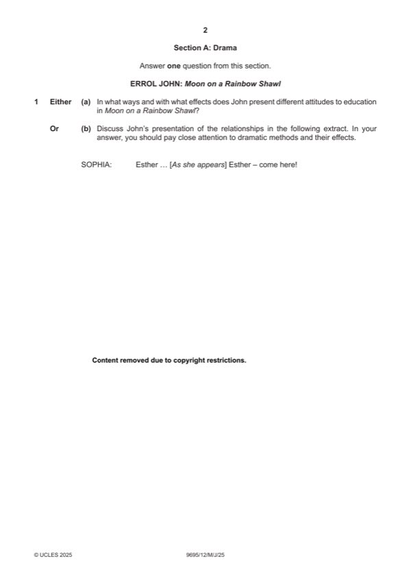

Question 1

Original paper page 2
Part 1(a) — solution
Answer: OR
In what ways and with what effects does John present different attitudes 25
to education in Moon on a Rainbow Shawl?
Mark according to the levels of response marking criteria.
OR
Mark points
- Correct result: OR
Part 1(b) — solution
Discuss John’s presentation of the relationships in the following extract. 25
In your answer, you should pay close attention to dramatic methods and
their effects.
Mark according to the levels of response marking criteria.
WILLIAM SHAKESPEARE: Measure for Measure
EITHER
Mark points
- Include the ideas shown in the solution above.